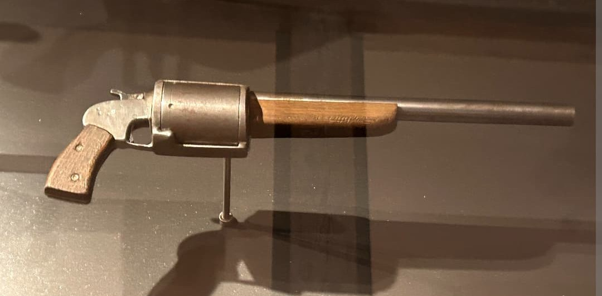

Matériel clandestin
Résistance 1940–1944
Entre 1940 et 1944, la Résistance française a utilisé un matériel varié : armes improvisées, armes anciennes modifiées, explosifs de sabotage, véhicules civils transformés et postes radio clandestins. Cette fiche présente les objets essentiels utilisés dans les actions de sabotage, de transport et de communication.
Armes improvisées

Les grenades artisanales étaient fabriquées à partir de boîtes métalliques remplies de poudre et équipées de détonateurs rudimentaires. Simples, efficaces, elles servaient aux sabotages rapides.

Les ateliers clandestins produisaient des pistolets artisanaux. Leur conception minimaliste permettait un tir rapproché, idéal pour les opérations discrètes.

La Sten MK II, parachutée par les Alliés, était souvent modifiée localement : crosses raccourcies, chargeurs adaptés, pièces remplacées. Une arme légère, facile à dissimuler.
Lefaucheux canon scié

Le revolver Lefaucheux, issu du XIXe siècle, était encore présent dans les fermes françaises. Les résistants en ont scié le canon pour le rendre plus compact, discret et utilisable en tir rapproché.
Explosifs et matériel de sabotage

Les charges de sabotage servaient à détruire rails, ponts ou véhicules. Leur composition simple permettait un transport discret et une mise en œuvre rapide.

Le détonateur était l’élément essentiel des opérations de sabotage. Les résistants utilisaient des modèles parachutés ou fabriqués localement.
Véhicules civils militarisés

Les voitures civiles étaient transformées : caches d’armes, plaques interchangeables, peinture mate, faux marquages. Elles servaient aux déplacements clandestins.

Certains véhicules possédaient des compartiments secrets permettant de dissimuler armes, explosifs ou documents. Indétectables lors d’un contrôle rapide.
Postes radio clandestins

La Valise MK II était le poste radio le plus utilisé par les réseaux. Compacte, démontable, elle permettait d’émettre vers Londres en quelques minutes.

Le MCR1, surnommé “le biscuit”, était un mini‑poste radio discret, idéal pour les zones isolées.